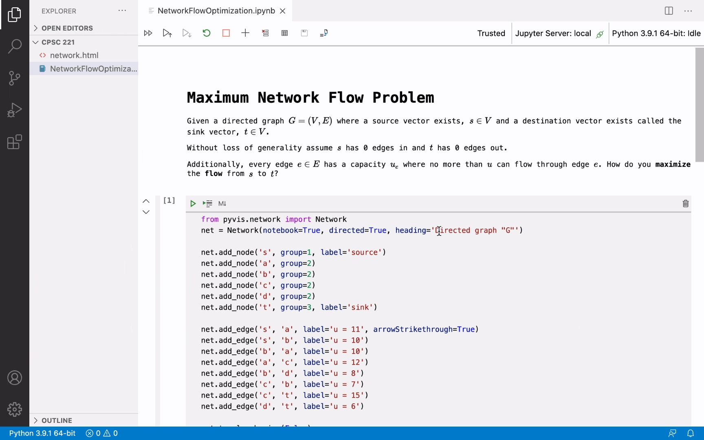

Jupyter Notebooks
Jupyter Notebooks are documents that contain a mix of live code (Python, R, Julia, JavaScript, and more), visualizations, and narrative text (Markdown). They're useful for breaking down concepts in a story telling form, where you can give some context and show the code below along with interactive visualizations.
What do they look like in a classroom?
Below are several real life examples of how Jupyter Notebooks can be used in classrooms.
Storytelling
Notebooks can be useful for explaining large topics, piece by piece, with rich imagery and videos embedded.
Here one instructor is using extra visualizations and pseudo-code to help students code their merge sort implementation.
This instructor is explaining how time complexities work broken down with tables of data, graphs, explanations, and code:
It's also a great way to see and compare the exact runtimes of code blocks, which can be very helpful for learning data structures and algorithm fundamentals.
Interactive output
Jupyter Notebooks can also have rich interactive outputs. The instructor below is creating a Notebook for a lecture about the maximum flow problem and utilizing the pyviz library to make an interactive network graph to visualize the problem description. They are also utilizing the built-in LaTeX support to show mathematical symbols for the problem constraints.

Rich assignments
They are also a great format for handing out assignments. Here an instructor created an assignment to teach Binary Search Trees that includes a mix of students needing to implement code and write long form written responses to theoretical questions.

Getting started
You will need to have Python 3 installed on your machine along with the Microsoft Python extension installed from the VS Code Marketplace. You can review the introductory Python tutorial for help with setup.
In addition, you need to install the Jupyter Notebooks extension.
Once you have Python and the extensions installed, you will need to activate the Python environment by using the command Python: Select Interpreter from the Command Palette (⇧⌘P (Windows, Linux Ctrl+Shift+P)).
For full instructions on how to use Jupyter Notebooks, follow the step by step Jupyter Notebook guide.